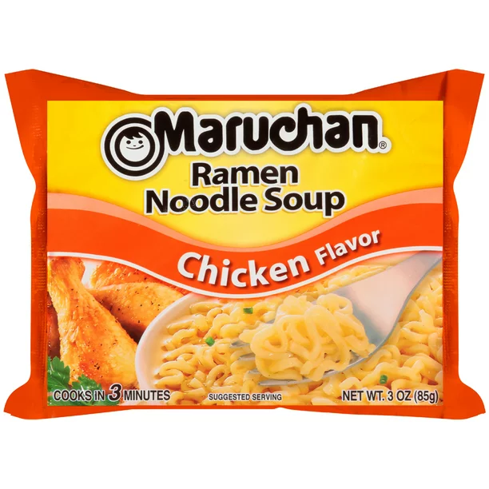

Ramen Recipe

This is a quick, family recipe on how to make Ramen!
Ingredients list
- Pot
- Some water
- Stove
- Ramen pack
Now it's time to make it. Here's how:
- Turn stove on.
- Fill pot with water.
- Boil water.
- Once boiling, add ramen noodles to water. DO NOT ADD THE SEASONING YET!
- Boil for 3 minutes.
- Once noodles have cooked for 3 minutes, empty seasoning packet into ramen.
- Cook for 1 more minute with seasoning.
- Empty pot into bowl and turn off stove.